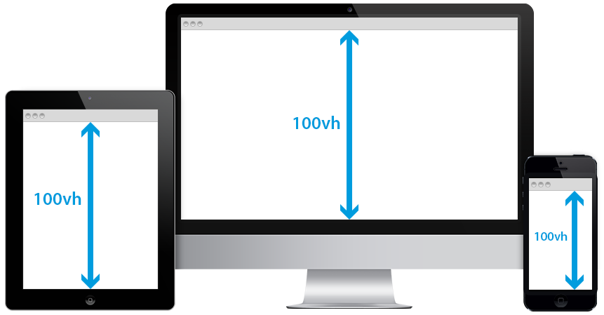
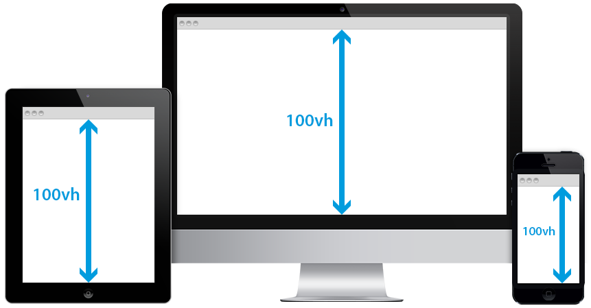
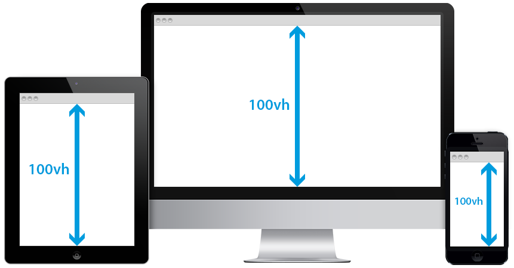

¿Qué es el diseño responsivo?
El diseño responsivo permite que una página web se adapte automáticamente a distintos tamaños de
pantalla y dispositivos.
¿Por qué es importante el uso del diseño responsivo?
Mejora la experiencia del usuario y el posicionamiento en buscadores (SEO) al optimizar el sitio
en todas las plataformas.
¿Qué es el viewport?
El viewport es el área visible de la pantalla de un dispositivo, ya sea de una
computadora, un celular o una tablet.
¿Qué es el css3 media Queries?
Es una característica que permite aplicar estilos diferentes según el dispositivo, tamaño de
pantalla, resolución, orientación, o incluso el tipo de pantalla (como impresora o pantalla
táctil).
